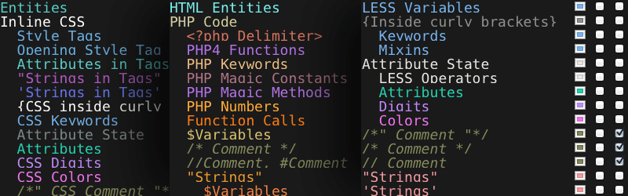

Coda SEEStyles by Jason Robb
I love Panic's Coda.
Colorful syntax highlighting for Panic's Coda—the one-window web development app.
A few things to note
- HTML and CSS are cool colors.
- PHP and Javascript are warm colors.
- Background color:
#1a1a1a - Invisible character color:
#212222
More info about the genesis of this project at the bottom of the page.
HTML syntax highlighting

CSS syntax highlighting

Javascript syntax highlighting

PHP syntax highlighting

LessCSS syntax highlighting

Use the LESS.mode for LessCSS
Syntax Mode for LessCSS by Pradador.
Text and background choices
I started with black text on a white background. Staring into a white background starts to get uncomfortable when you've been doing it a while. So I inverted the colors. Next, I adjusted the colors for the most important things, like elements, classes, and ID's. The content has always remained white on black, because there's always some amount of content editing to be done, and finding the text can be difficult when surrounded by a sea of tags.
Color choices and syntaxes
I started with HTML and CSS, then branched out to PHP and Javascript. Since I spend the most time writing markup and style, I chose cool colors. When I did write PHP and JS it was usually interspersed with HTML. So I made the "backend" code warm colors to make it easy to spot a snippet of PHP in the midst of a lot of HTML. Eventually I added LessCSS support because it's so friggin' badass.
Why did I do this?
Because I write a lot of code. The more time I spend with something, the more important it is to me that it works well and looks pleasing.